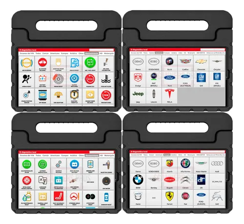
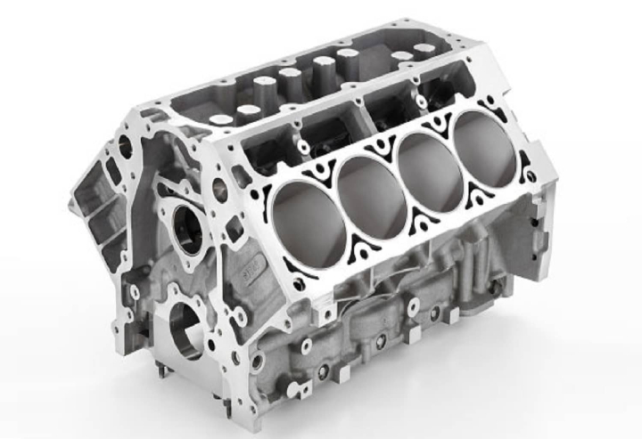
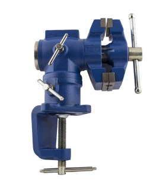
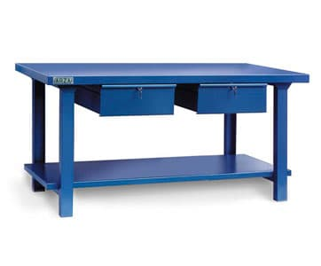

🔧 Servicios generales de mecánica
-
🛠️ Diagnóstico mecánico general
Evaluación completa del vehículo para detectar fallas y prevenir problemas mayores.




-
🔄 Mantención preventiva
Servicio periódico que ayuda a mantener el buen funcionamiento y alargar la vida útil del vehículo.


-
📏 Revisión de niveles (aceite, refrigerante, etc.)
Control y ajuste de líquidos esenciales para un funcionamiento seguro y eficiente.


-
🚗 Inspección pre-compra de vehículos
Revisión detallada del estado del vehículo antes de comprarlo, evitando sorpresas o gastos ocultos.